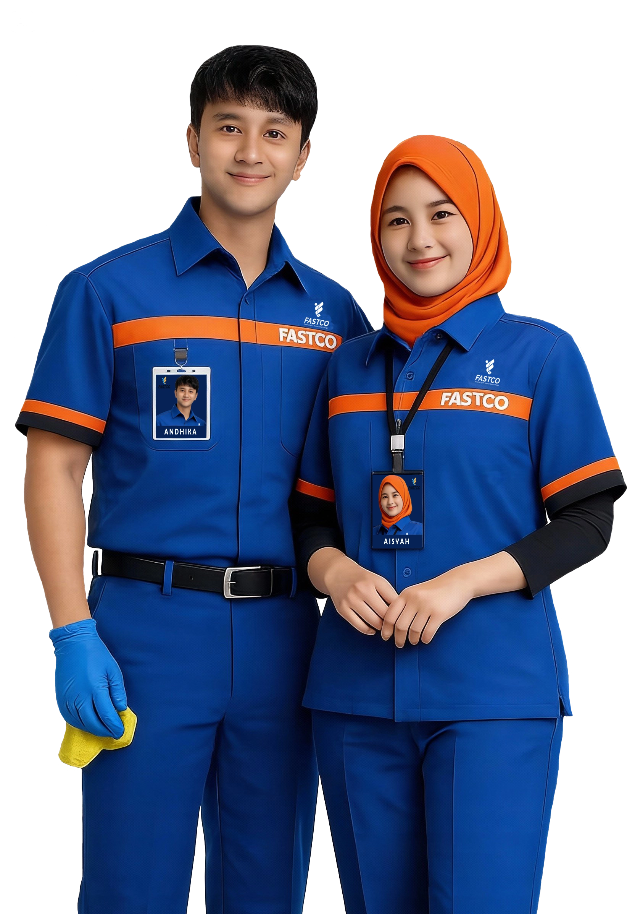
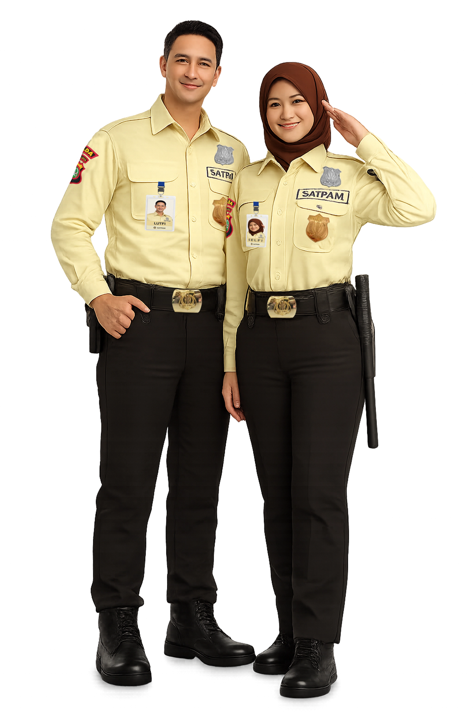

Fastco adalah penyedia layanan outsourcing yang berada di bawah naungan PT Mentari Sarana Niaga (MSN), sebuah perusahaan multi-usaha yang beroperasi langsung di bawah Holding PT Madina Mentari Utama milik Pimpinan Pusat Muhammadiyah.
Dengan pengalaman dan dukungan manajemen profesional, Fastco hadir sebagai solusi kebersihan yang mengutamakan standar higienis, keselamatan kerja, serta kualitas layanan terbaik, khususnya untuk lingkungan rumah sakit, klinik, dan fasilitas kesehatan lainnya.
Kami berkomitmen memberikan layanan kebersihan yang aman, modern, dan dapat diandalkan, guna menciptakan ruang yang bersih, nyaman, dan bernilai bagi setiap mitra kami.
Lantai, kaca, dan furnitur dibersihkan hingga mencapai standar higienis: bebas debu, bebas noda, kering, tidak berjamur, serta tertata rapi sesuai standar.
Setiap area diperiksa menggunakan checklist khusus untuk memastikan tidak ada spot, bercak, maupun kerusakan pada permukaan lantai, kaca, dan furnitur.
Tim kami terlatih menangani lantai marmer, granit, keramik, dan vinyl sehingga selalu mengkilap tanpa merusak material.
Hasil kerja tidak hanya bersih secara visual, tetapi juga memenuhi standar kebersihan yang aman bagi pasien, tenaga medis, dan pengunjung.
Tidak hanya dibersihkan, furnitur akan ditata kembali secara rapi dan dipastikan bebas bau, sehingga menciptakan lingkungan yang nyaman.
Pekerjaan yang tidak dapat dilakukan pada hari biasa atau jam sibuk kantor, maka akan dilakukan pada saat-saat tertentu secara berkala, misalnya: pembersihan kaca luar, ceiling area yang sulit dijangkau kristalisasi lantai marmer atau granit, pencucian karpet dan pembersihan kanopi.
Pekerjaan yang dilakukan setiap hari/daily activities yang meliputi:

Setiap pekerjaan dilaksanakan berdasarkan program kerja yang telah direncanakan. Program kerja disusun untuk setiap proyek, mencakup periode tahunan, bulanan, mingguan, dan harian, lalu diserahkan kepada manajemen gedung untuk mendapatkan persetujuan. Pelaksanaan pekerjaan pada setiap periode tersebut akan dilaporkan oleh pelaksana kepada manajemen gedung. Program kerja dibagi menjadi:
Merupakan pekerjaan yang dilakukan secara rutin setiap hari, contohnya:
Merupakan pekerjaan yang dilakukan hanya dalam waktu-waktu tertentu seperti mingguan dan bulanan, contohnya:
Fastco merupakan penyedia layanan outsourcing di bawah naungan PT Mentari Sarana Niaga (MSN), sebuah perusahaan multi-usaha yang beroperasi langsung di bawah Holding PT Madina Mentari Utama milik Pimpinan Pusat Muhammadiyah. Dengan pengalaman yang kuat serta dukungan manajemen yang profesional, Fastco hadir sebagai mitra terpercaya dalam penyediaan layanan keamanan yang berstandar tinggi.
Kami menyediakan tenaga keamanan yang terlatih, responsif, dan berintegritas tinggi untuk memastikan perlindungan optimal di berbagai lingkungan operasional, termasuk perkantoran, fasilitas komersial, kawasan industri, rumah sakit, serta area publik lainnya.
Fastco berkomitmen memberikan layanan keamanan yang modern, sistematis, dan dapat diandalkan, guna menciptakan lingkungan yang aman, tertib, dan memberikan rasa nyaman bagi setiap mitra yang kami layani.
Sebagai nilai tambah, Fastco menerapkan Hospital Grade Security System, yaitu standar pengamanan khusus untuk lingkungan rumah sakit yang memastikan setiap personel bekerja secara humanis, responsif dan adaptif terhadap situasi klinis maupun keadaan darurat. Sistem ini menjadikan Fastco sebagai mitra keamanan yang selaras dengan standar mutu pelayanan rumah sakit.
Fastco menjalankan setiap tugas dengan kompetensi, ketelitian, dan standar operasional yang tinggi. Seluruh personel keamanan dibekali pelatihan terstruktur untuk memastikan pelayanan yang tepat, cepat, dan sesuai prosedur.
Kepercayaan adalah fondasi hubungan kami dengan setiap mitra. Fastco berkomitmen menjaga kerahasiaan, keamanan, serta keandalan layanan sehingga setiap klien merasa aman menitipkan tanggung jawab pengamanan kepada kami.
Kami menjunjung tinggi kejujuran, disiplin, dan tanggung jawab dalam setiap tindakan. Setiap personel Fastco bekerja dengan etika profesional yang kuat untuk memastikan keamanan yang dapat dipertanggungjawabkan.
Fastco berkomitmen memberikan kualitas layanan terbaik melalui peningkatan kompetensi, evaluasi berkelanjutan, dan penggunaan metode pengamanan yang modern. Kami selalu berupaya menjadi mitra keamanan yang unggul dan terpercaya.
Pendidikan dan pelatihan dasar satuan pengaman sebagai calon anggota satuan pengaman
Pendidikan dan pelatihan tingkat ke 2 untuk anggota satuan pengaman yang mengemban sebagai komandan regu
Pendidikan dan pelatihan tingkat ke 3 pengaman dengan level Chief/Manager atau bagi manager penanggung jawab terhadap bidang keamanan

Untuk membantu mitra meningkatkan efektivitas sistem pengamanan melalui analisis risiko, penilaian kebutuhan, penyusunan strategi, serta pemberian rekomendasi solusi yang tepat. Layanan ini memastikan setiap mitra memperoleh pendampingan keamanan yang terstruktur dan terpercaya.
Menyediakan layanan pengadaan peralatan keamanan yang berkualitas dan sesuai standar operasional, mulai dari perangkat pemantauan, akses kontrol, hingga perlengkapan pendukung operasional keamanan. Setiap peralatan dipilih secara selektif untuk memastikan keandalan, efisiensi, serta kesesuaian dengan kebutuhan operasional mitra, sehingga mendukung terciptanya sistem pengamanan yang optimal dan berkelanjutan.
Unduh Brosur Ajukan Penawaran Lamaran